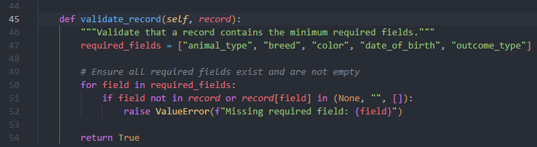
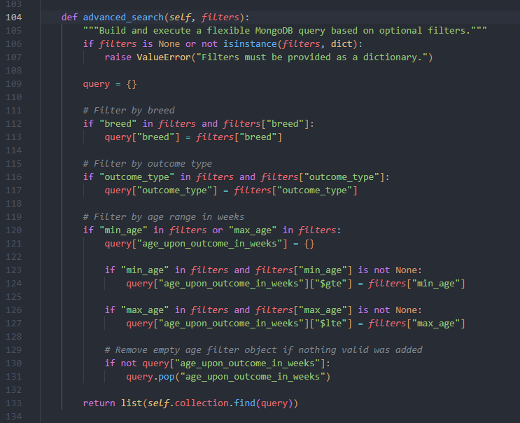

Artifact 3: Databases
MongoDB Client-Server Application
This artifact is my MongoDB client-server application, originally developed in CS 340: Advanced Programming Concepts. I selected this artifact because it demonstrates my ability to work with database systems, CRUD operations, data validation, and backend query logic using Python and MongoDB.
For my enhancement, I focused on improving record validation and adding more flexible search functionality to improve data integrity and query usability.
Artifact Overview
The original artifact was designed to support CRUD operations against a MongoDB database containing animal shelter records. It provided the ability to connect to the database, insert records, query documents, update documents, and delete records. This created a functional foundation for interacting with the data from a Python application.
While the original version supported the main CRUD operations, it did not fully validate the completeness of records before insertion, and its query handling could be improved to support more flexible filtering. The enhanced version improves the reliability of stored data and expands how records can be searched and retrieved.
Enhancement Highlights
- Added record validation before insertion to improve data integrity
- Defined required fields for inserted MongoDB records
- Implemented an advanced search function using optional filters
- Added documented security awareness for database credential handling
Selected Code Screenshots
The screenshots below highlight the major database improvements made to this artifact.
Figure 1: Record Validation Function

Figure 2: Advanced Search Function

Narrative
Artifact Description
The artifact I selected for this enhancement is my MongoDB client-server application, which I originally developed in CS 340: Advanced Programming Concepts. This project was designed to demonstrate CRUD operations using a MongoDB database. The application connects to a database, allows records to be inserted, queried, updated, and deleted, and provides a structured way to interact with stored data. The original version of this project focused on implementing the basic CRUD functionality and ensuring that the database connection and operations worked correctly.
For this milestone, I focused on improving the reliability and flexibility of the database operations by enhancing how data is validated before insertion and how queries can be constructed dynamically.
Justification and Enhancements
I selected this artifact for my ePortfolio because it demonstrates my ability to work with databases, manage data, and implement backend logic that interacts with a database system. This project highlights important database skills such as data validation, query construction, and CRUD operations, all of which are essential for modern software development.
The original implementation allowed data to be inserted and queried, but it did not fully validate the structure or completeness of the data being stored. This could lead to inconsistent or incomplete records being added to the database. To address this, I implemented a validation method that ensures all required fields are present before a record is inserted. This improves data integrity and helps prevent errors that could occur later when querying or processing the data.
In addition to improving validation, I enhanced the querying functionality by adding an advanced search method. This method allows dynamic queries to be built based on optional filters such as breed, outcome type, and age range. Instead of requiring a fixed query structure, this approach allows more flexible and efficient data retrieval, which better reflects how real-world database applications operate.
These enhancements demonstrate my ability to improve an existing system by addressing both data quality and query flexibility. They also show my understanding of how database design decisions can impact the reliability and usability of an application.
To further illustrate these enhancements, selected portions of the updated code are included above, highlighting the implementation of data validation and dynamic query construction.
Course Outcomes and Updates
Through this enhancement, I made strong progress toward the course outcomes related to designing and implementing computing solutions that involve storing, retrieving, and managing data. The addition of the validation method directly supports best practices in database design by ensuring that only complete and properly structured data is inserted into the system. This aligns with the outcome focused on using appropriate tools and techniques to implement computing solutions that deliver value.
The advanced search functionality demonstrates my ability to design flexible and efficient data retrieval methods, which aligns with the outcome related to solving problems using appropriate computing practices. By allowing dynamic query construction, the system becomes more adaptable and better suited for real-world use cases.
I also addressed aspects of the security mindset outcome by recognizing that sensitive information, such as database credentials, should not be hardcoded and should instead be managed securely. While I did not fully implement that change in this version, I documented it as an important consideration for future improvement.
At this point, I believe this artifact continues to align well with my original outcome-coverage plan, and no major updates are needed.
Reflection on the Process
Enhancing this artifact helped me better understand the importance of data integrity and how small improvements in validation can have a significant impact on the overall reliability of a system. One of the biggest things I learned was that allowing incomplete or inconsistent data into a database can create larger problems later when trying to retrieve or analyze that data. By adding validation before insertion, I was able to prevent those issues at the source.
Another key takeaway was the importance of flexible query design. The original implementation relied on predefined queries, but real-world applications often require more dynamic filtering based on user input. Implementing the advanced search method helped me understand how to build queries programmatically and how to use MongoDB operators to support more complex conditions.
The biggest challenge I faced was making sure the enhancements were meaningful without overcomplicating the existing code. I wanted to improve the functionality while still keeping the structure of the original project intact. By focusing on validation and query flexibility, I was able to enhance the artifact in a way that clearly demonstrates my skills while maintaining a clean and understandable design.
Overall, this process strengthened my understanding of database operations, data validation, and query construction, and it helped me see how these concepts apply to real-world software development.
Files
Use the links below to access the original and enhanced versions of this artifact.